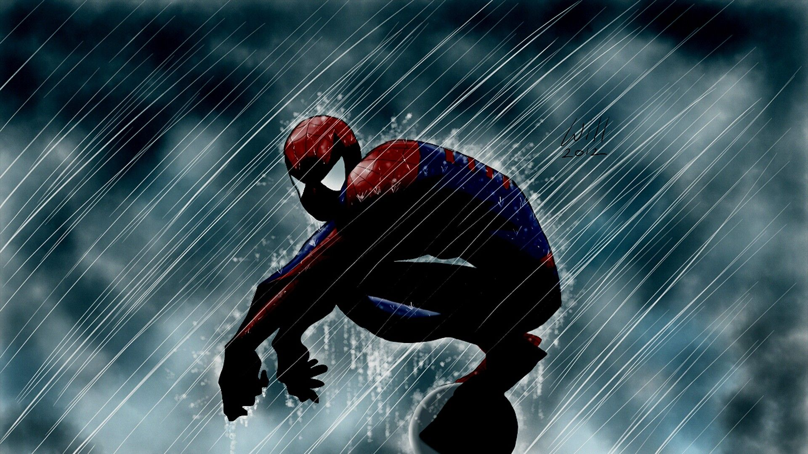

About Spiderman
Spiderman has superhuman strenght and the ability to cling to most surfaces. He is also extremly agile and has amazing reflexes. Spiderman also has a "Spider sense", that warns him of impending danger.
Spiderman in the rain
- He's superhuman
- He's treated as bad-ass
- He's trying to be a good guy
Spidermans friends
Spiderman has some awesome friends. I think his best friend is Ironman. He's Awesome. Click on the links below to read more about them: